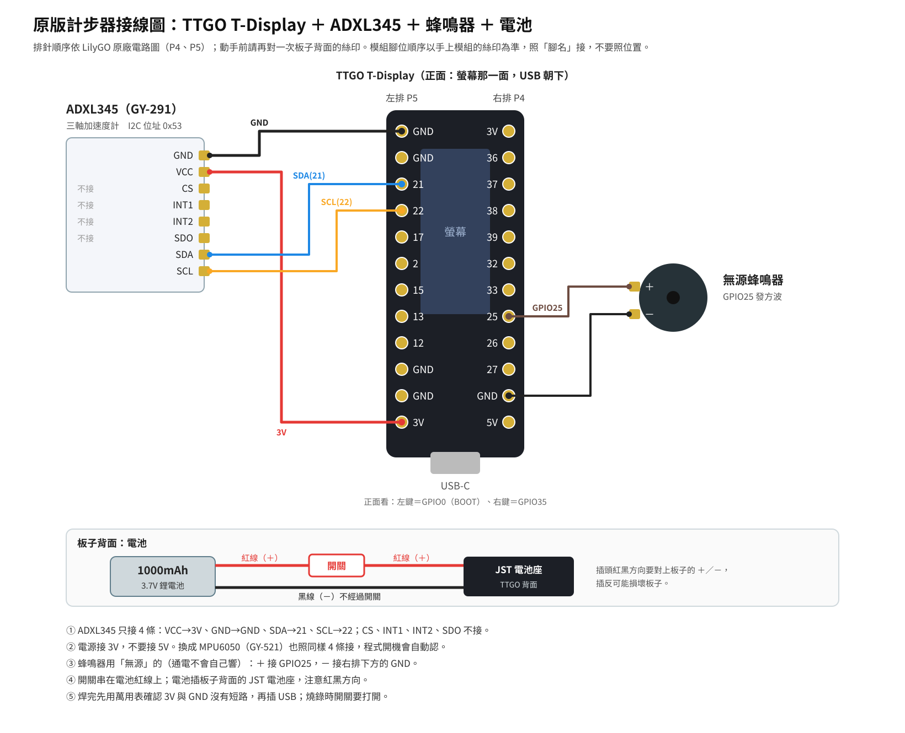
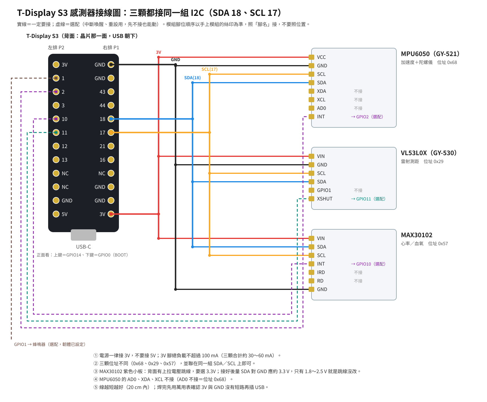

計步器接線圖
兩種板子各一張。照「腳名」接，不要照位置；排針與模組的腳位順序，動手前請再對一次板子與模組上的絲印。
原版：TTGO T-Display ＋ ADXL345 ＋ 蜂鳴器
加速度計接 I2C（SDA 21、SCL 22），無源蜂鳴器接 GPIO25，鋰電池插板子背面的電池座、開關串在紅線上。換成 MPU6050 也照同樣 4 條線接，程式開機會自動認。

| 元件腳位 | 接到 TTGO T-Display |
|---|---|
| ADXL345 VCC | 3V（不要接 5V） |
| ADXL345 GND | GND |
| ADXL345 SDA | GPIO21 |
| ADXL345 SCL | GPIO22 |
| ADXL345 CS、INT1、INT2、SDO | 不接 |
| 無源蜂鳴器 ＋ | GPIO25 |
| 無源蜂鳴器 － | GND |
| 鋰電池 | 板子背面 JST 電池座；紅線（＋）先經過開關 |
點圖可以放大。下載 PNG

T-Display S3：三顆感測器共用一組 I2C
MPU6050、VL53L0X、MAX30102 都接 SDA 18、SCL 17；實線一定要接，虛線是選配（中斷、重設、蜂鳴器）。

點圖可以放大。下載 PNG

焊完先用萬用表確認 3V 與 GND 沒有短路，再插 USB。